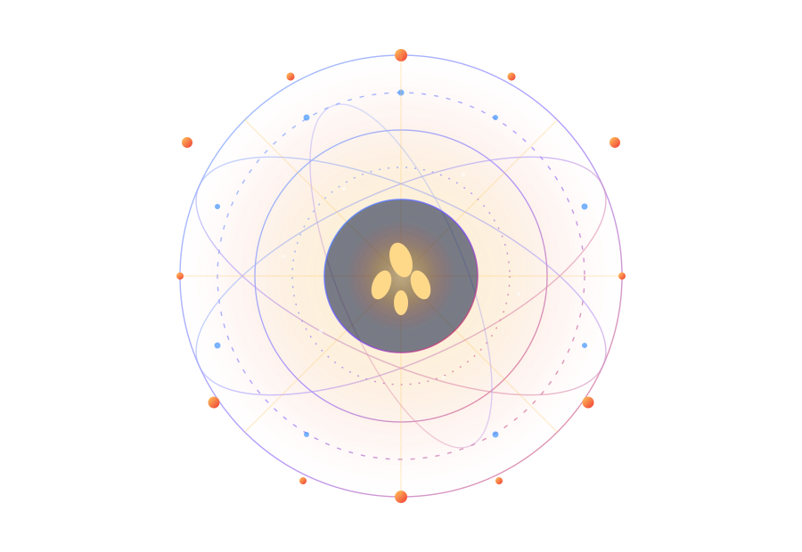

◈
科学底座
以热力学与生命科学为理论起点

公司成立于 2023 年 3 月，2026 年 9 月由「河南省负熵生命文化教育有限公司」更名为现名，业务覆盖医学与自然科学研究、细胞技术应用、健康咨询服务、预包装食品与食用农产品流通等领域。
以热力学与生命科学为理论起点
让有序饮食成为可坚持的日常
连接科研、产品与合作伙伴
企业公开资料把竞争优势归纳为底层逻辑、品类聚焦、消费频次、赛道选择、渠道模型与信任构建六个方面。
以负熵生命科学为底层支撑，摒弃浮躁营销，回归商业增长的本质逻辑。
聚焦负熵小米核心大单品，集中渠道资源与营销火力，形成清晰的品类认知。
主食属性决定高频消费场景，用户粘性与生命周期价值随之稳步攀升。
开创负熵生命食疗新品类，抢占品类创新的先发优势与市场红利。
打造可复制的标准化渠道运营模型，依托区位优势推进全国布局。
汇聚专家、专业机构与真实试用反馈，构建信任壁垒，降低市场教育成本。
从外到内，需求逐级升级，产业价值层层递进，构成健康、长寿、抗衰与逆龄的全维生命生态体系。
核心诉求「不生病」，聚焦医疗服务、基础诊疗与生命保障，是产业链的基石与流量入口。
核心诉求「活得久」，面向慢病管理、康复护理与养老服务，回应老龄化社会的长期需求。
核心诉求「老得慢」，覆盖医美抗衰、生物科技、功能食品与个性化健康管理。
以生命质量升级为方向，通过前沿生命科技与日常饮食方案回应更高层次的健康需求。
负熵小米以颗粒金黄饱满、米油厚重、粥感绵密为主要特点，把有序饮食的理念带进一日三餐。

建立有序饮食体系，梳理身体底层机能。
从日常主食出发，关注机体代谢有序度。
以可长期坚持的饮食方式陪伴生活。
以上为品牌理念与产品信息介绍，负熵小米属于普通预包装食品，不具有疾病预防、治疗功能；相关内容不构成医疗建议或功效承诺。
企业沿革中的公开节点，记录从主体设立到品牌升级与产业协作的过程。
在郑州郑东新区登记成立，开启负熵生命科学相关业务。
完成企业名称变更，正式启用「逆龄韶华」品牌标识。
焦作温县负熵小米项目科研基地迎来产业考察交流。
《负熵小米投资计划（2026）》呈现产品与渠道双轮结构。
企业动态、科研进展、产业观察与产品信息，持续公开对外资讯。
负熵指系统有序度的提升。薛定谔在《生命是什么》中提出「生命以负熵为食」，用以描述生命体维持有序状态需要持续从环境中获取秩序。
业务覆盖医学与自然科学研究、细胞技术应用、健康咨询服务，以及预包装食品、食用农产品流通，并以负熵小米作为核心主食产品。
作为日常杂粮主食，可用于早餐粥、杂粮饭、小米羹与辅食搭配，产品规格为 5 斤 / 袋。
公开资料中的合作方向包括会员零售、创业合伙人、生活馆、城市批发，以及科研与品牌层面的生态协作。